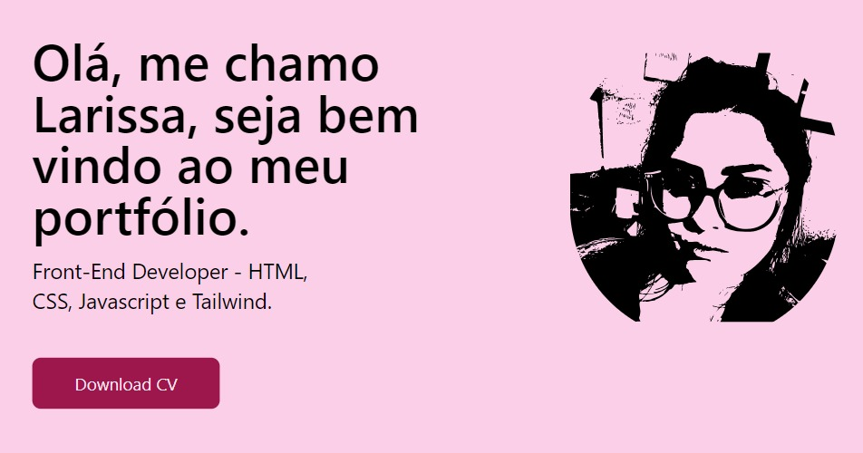

Download CV
Front-End Developer - HTML, CSS, Javascript e Tailwind.
Olá, me chamo Larissa, seja bem vindo ao meu portfólio.
Cursos
Elaborata
Front-End
Ago 2023
Alura
May 2023
HTML e CSS
Parte 1 e 2, feito na Alura, aprendi a usar o Sublime Text 3, e a criar uma pagina na internet usando o HTML5 e o CSS3.
Feactured Works

Designing Dashboards
2023
Front-End
Esse é meu primeiro trabalho, meus desafios foi principalmente na parte do jquery, e para colocar no ar o site, depois de pronto modifiquei a cor pois achei que estava muito rosa.